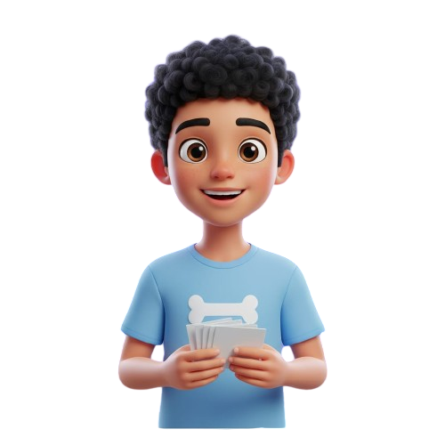
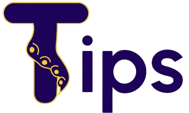
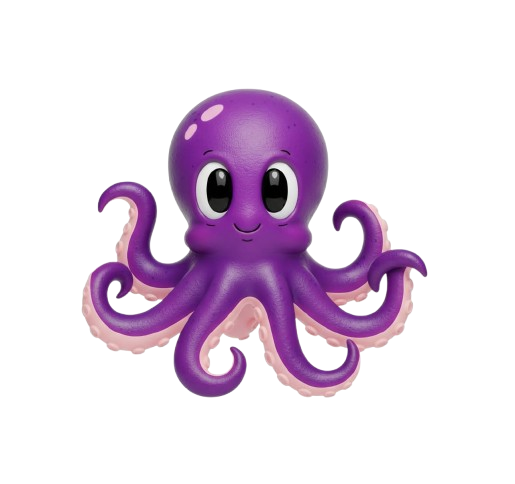
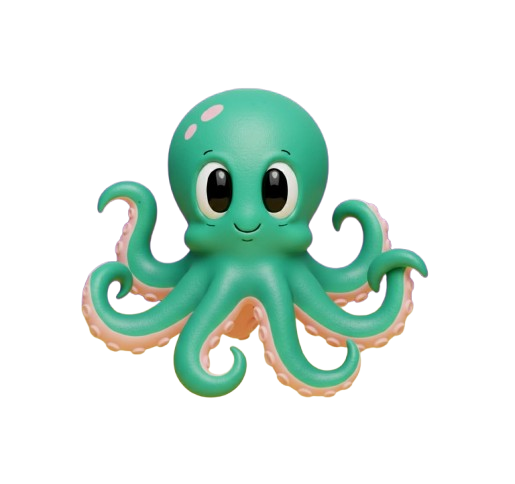
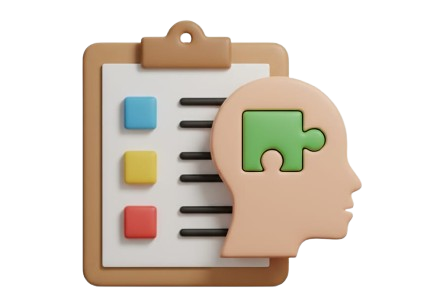

La respiración diafragmática envía una señal directa al sistema nervioso para reducir el estrés.


La mejor forma de predecir
el futuro es creándolo.
La concentración se puede manejar y mejorar, estudiando en un lugar sin distracciones y usando técnicas como Pomodoro.
El cerebro enfoca la mente gracias a la atención, memoria de trabajo y control ejecutivo, evitando distracciones externas.

Tips
MANEJAR LA ANSIEDAD

Anclarse en el aquí y ahora observando lo que te rodea recupera la sensación de control.
Desglosa tareas grandes en pasos manejables y aprende a priorizar lo importante.
Mover el cuerpo de forma divertida libera endorfinas que mejoran tu estado de ánimo.
Prepararse con tiempo es clave para alcanzar un buen resultado y abrir puertas para el futuro académico.

Semanas antes
- Repasa estratégicamente
- Haz simulacros
- Organiza materiales

La noche antes
- No estudies hasta tarde
- Deja todo listo

Día de la prueba
- Levántate temprano
- Actitud positiva